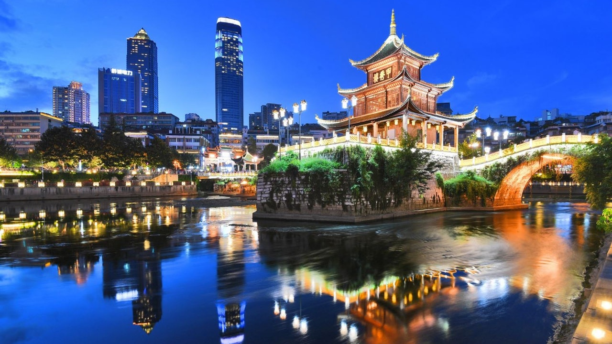
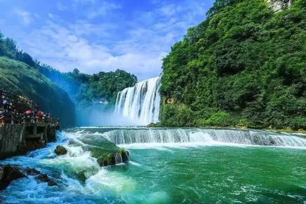
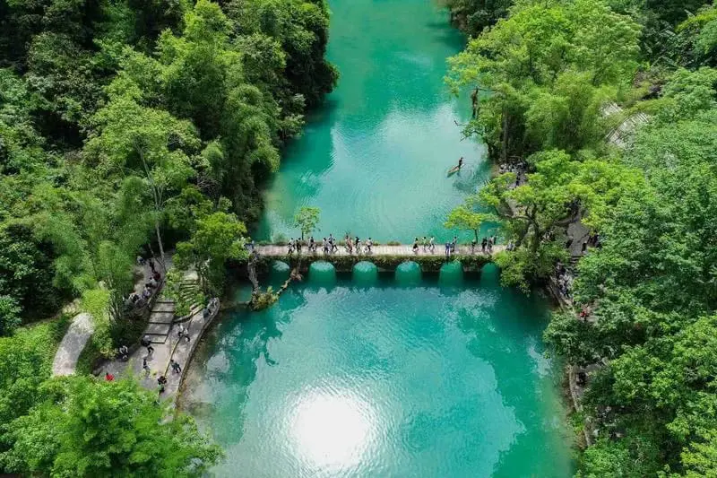
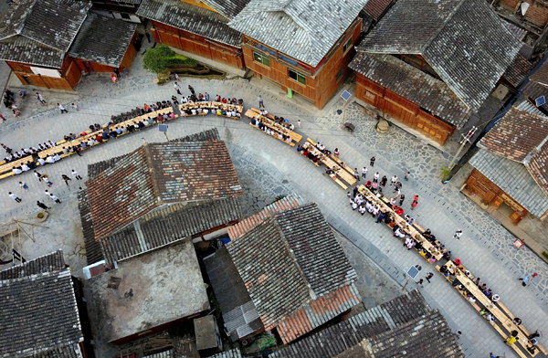

貴州：山水民俗探秘
走進地球綠寶石，探訪千戶苗寨
DAY 01 : 貴陽市區地標
- 🏛️ 甲秀樓： 始建於明代的地標，傍晚燈火倒映南明河，非常出片。
- 🥘 青雲市集： 一站式吃遍絲娃娃、腸旺麵、豆腐圓子等非遺小吃。
- 🌃 初見貴陽： 漫步市區街道，感受山城夜晚的尋味樂趣。


DAY 02 : 重遊《西遊記》
- 🌊 大瀑布景區： 世界唯一可六個方位觀賞的瀑布，穿上雨衣鑽水簾洞。
- 💎 天星橋： 深入後半段觀賞「銀鏈墜潭」，感受極致的水流美感。
- 🥘 在地晚餐： 推薦安順特色「奪奪粉」或香噴噴的「烙鍋」。
DAY 03 : 荔波地球綠寶石
- 🐉 臥龍潭： 醉人的藍綠色水面，是荔波最具代表性的視覺盛宴。
- 🍃 水上森林： 夏季可踩水避暑，漫步在清涼的綠意廊道中。
- 🌉 小七孔古橋： 傍晚人潮退去，與這座優美的古橋留下絕美合影。


DAY 04 : 西江千戶苗寨
- ✨ 觀景台： 傍晚等候千家萬戶燈光亮起，繁星墜落山坡的極致震撼。
- 🏘️ 也東寨： 鑽進老巷子與銀飾坊，體驗最真實的苗族生活氣息。
- 🍶 長桌宴： 體驗苗族「高山流水」敬酒熱情，挑戰最趣味的民俗互動。
DAY 05 : 徜徉舞陽河畔
- ⛩️ 青龍洞： 懸空建在懸崖上的「南方懸空寺」，見證古建築奇蹟。
- 🎐 古巷道探秘： 穿梭四方井巷，尋找歪門邪道的特殊建築趣味。
- 🛶 舞陽河游船： 晚間燈籠亮起，在太極圖形狀的古鎮河畔感受優雅韻味。